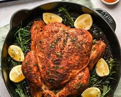

Spicy Roasted Chicken

This spicy roasted chicken is a flavorful and easy-to-make dish that is
perfect for a weeknight dinner or a weekend gathering. The chicken is
seasoned with a blend of spices that give it a deliciously spicy kick,
while the roasting process ensures that the meat stays juicy and tender.
Serve it with your favorite sides, such as roasted vegetables or a fresh
salad, for a complete and satisfying meal.
Ingredients
- 1 whole chicken (about 4 pounds)
- 2 tablespoons olive oil
- 1 teaspoon paprika
- 1 teaspoon garlic powder
- 1 teaspoon onion powder
- 1 teaspoon cayenne pepper
- 1 teaspoon salt
- ½ teaspoon black pepper
Instructions
- Preheat oven to 425 degrees F (220 degrees C).
-
In a small bowl, mix together olive oil, paprika, garlic powder, onion
powder, cayenne pepper, salt, and black pepper to create a spice rub.
-
Rub the spice mixture all over the chicken, making sure to coat it
evenly. Place the chicken in a roasting pan or on a baking sheet.
-
Roast the chicken in the preheated oven for about 1 hour and 15 minutes,
or until the internal temperature reaches 165 degrees F (74 degrees C)
and the skin is crispy and golden brown.
-
Remove the chicken from the oven and let it rest for 10 minutes before
carving and serving.
Enjoy your spicy roasted chicken with your favorite sides, and savor the
delicious flavors of this easy-to-make dish!
Go back to Home Page